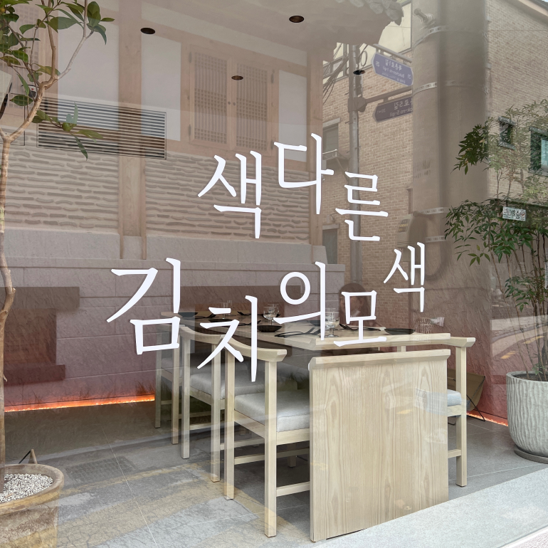
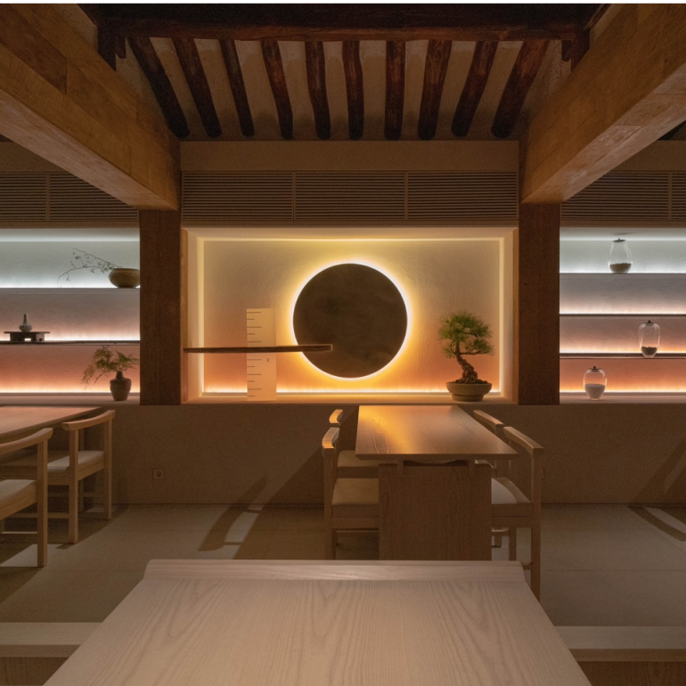
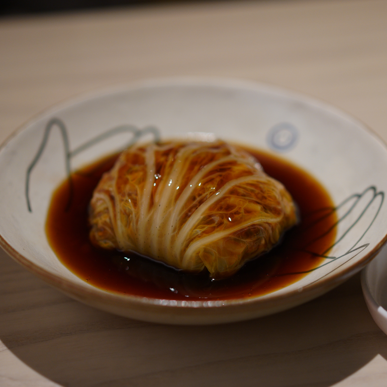
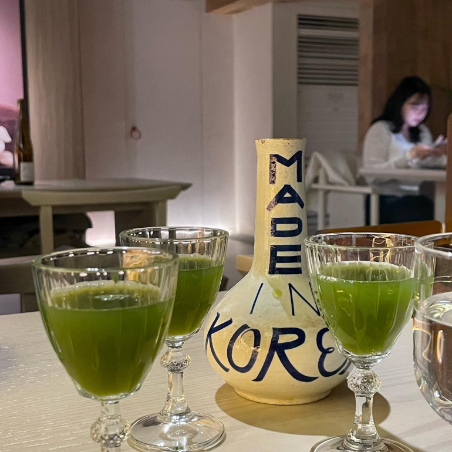
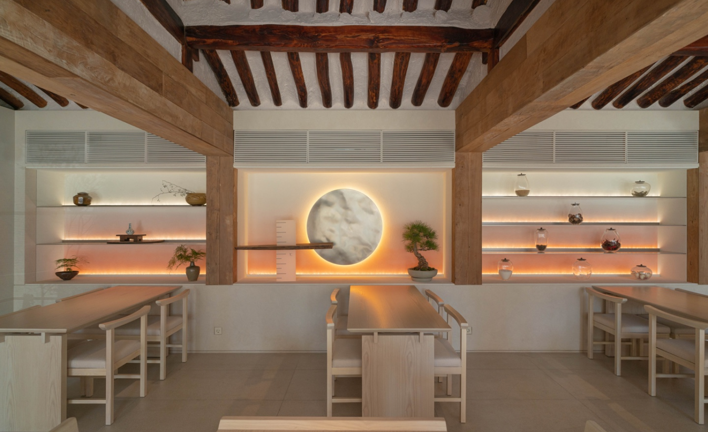

キムチが一番美味しく煮える温度6.5℃。店の名前にふさわしく、温6.5はユニークなキムチ料理が味わえるワインバーだ。一般的な唐辛子粉が入ったキムチからジャンキムチ、味噌キムチはもちろん、バジルとパクチー、アスパラガスなど異色の材料を活用したキムチ料理がある。ここのシグネチャーメニューは白菜サム。 白菜の中に隠れた豚肉を赤ワインソースと一緒に食べる料理で、その深い風味が絶品です。様々なワインはもちろん、韓国酒まで楽しめる場所で、訪れるとその新鮮さと恍惚とした味に驚くだろう。
韓国式のおつまみが初めての方には「東海岸イカたっぷりキムチチヂミ」がおすすめ。キムチチヂミのキムチはおかずとして出てくるキムチとは全く違う味なのであまり辛くなく、老若男女楽しめるメニューだ。今夜は韓国の伝統と現代が混ざり合う白熊マッコリに出かけてみてはいかがだろうか。

住所 : ソウル鍾路区北村路（チョンノグ·プクチョンロ）1ギル28地上1階オン6.5
最寄りの地下鉄駅 : アングク駅(徒歩1分)
ホームページ : https://app.catchtable.co.kr/ct/shop/on65
近くの観光地

- チャンドックン(昌徳宮)
- 住所 : ソウル鍾路区栗谷路99
- ホームページ : www.cdg.go.kr/default.jsp
- トクスグン(徳寿宮)
- 住所 : ソウル中区世宗大路99徳寿宮
- ホームページ : www.deoksugung.go.kr